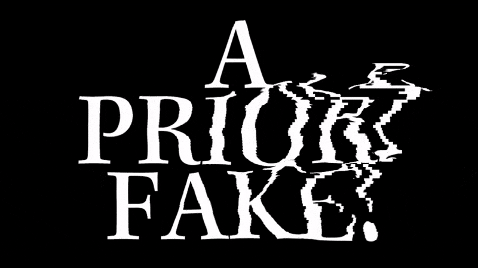
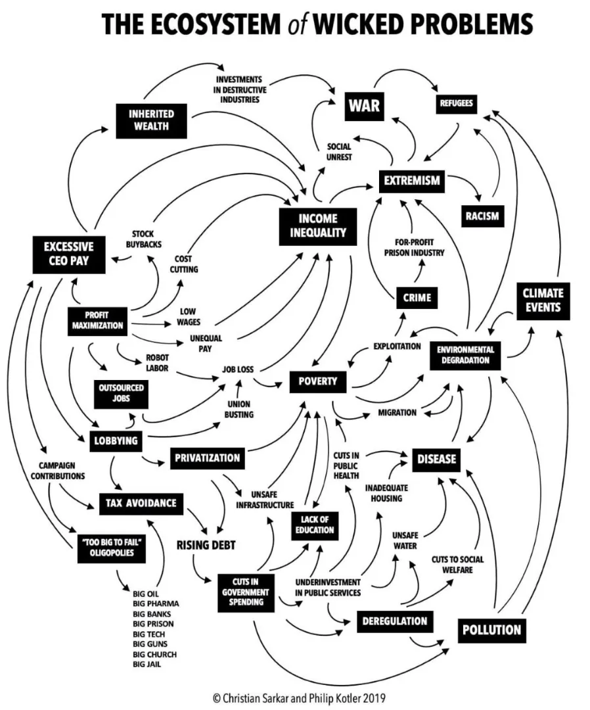
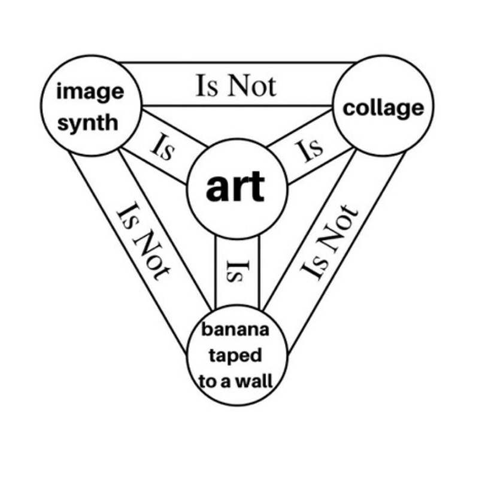
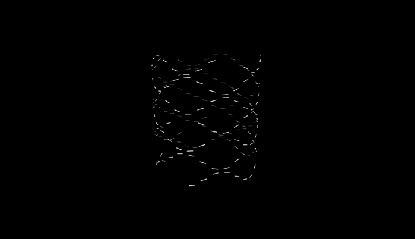

The “A priori fake”
The World Wide Web brought us a knowledge explosion, but with it came extreme responsibility. And so we had to learn and understand new threats and dangers.

The same can be said for AI-generated information. With the help of new AI-powered tools, meaningful media can now be mass-produced in the blink of an eye. We need to learn new principles to make sense of it all.
Before 2022, we needed to learn not to "trust everything we see on the Internet". In the future, we must learn “not to trust anything, unless proven real”.
I call this new paradigm the "A priori fake".
The "A priori fake" is a condition in which one must assume that all media is potentially fake unless proven otherwise, due to the increasing ability of machines to produce real-world human-like content.
“Fake”, treacherous and false content has existed in any media for a long time. In fact, the word is estimated to date back to the 18th century when it was used to describe things that were artificially beautified. Today we use it to describe any kind of uncanny or untrue content (for example Deepfakes, 3D Renders, photorealistic drawings, voice generation, etc.), but at the core, the meaning of the word remains the same. Fakeness is medium agnostic: Every form of media (Text, Video, Photo, Sound, …) can contain fake or artificial content.
Prior to modern AI algorithms, creating fake Imagery, Video or Sound was pretty hard to do for the average Joe. This changed in 2022. The frequency with which such media can be produced and also combined (Video+Sound for example) left many of us in disbelief. Machines are now able to copy and produce almost any kind of digital content and upload it onto the internet automatically through specially designed software pipelines. In this hailstorm of new information, we need not only a new map to identify the sources of “real” information, but we also need a new compass to guide us to the sources that actually matter. In other words: We need new mental models.
Updating ourselves to form new beliefs can be hard and challenging. Anyone who has followed or engaged in the recent public debates about data sources, the training of these models, copyright, and so on, will have realized that many of the rules, laws, and ideas from the pre-AI era now seem outdated and irrelevant. In these current debates, there are largely two camps: Those that argue for the machines and claim that technological progress cannot be stopped (let’s call them the “Techno Disciples”), and those that argue that creative AI breaks existing laws and that human sovereignty must be protected at all costs (let’s call them the “Modern Luddites”). What people who position themselves into only one such camp often fail to understand is that both camps are right: Technological progress is indeed very hard to stop, but over time it will give birth to new laws and thus satisfy the demands of the Luddites.
We are in the middle of an intense period of change. Big Chunks of the High Tech industry are in the process of being replaced by “Higher Tech”. Jobs in industries that were thought to be safe are being disrupted. It is not only the Artist or the Modern Luddite that will experience a change. It’s (almost) every industry.
On our path to complete mediasation, we’re swallowing parts of our current cultures and, step by step, we lose a lot of what past generations thought would make us human. At the same time, new cultures are born.
In this “A priori fake” world, where the majority of what we consume is actually unreal or fake and where the analog world becomes extraordinary, we need new eyes to look at our surroundings. We need to redefine what “fake” means.
We shape our tools, and thereafter our tools shape us... Read AI Summary The increasing ability of machines to produce real-world, human-like content has created a condition described as the "A priori fake," in which all media must be assumed to be potentially fake unless proven otherwise. This shift has led to debates between those who believe technological progress cannot be stopped ("Techno Disciples") and those who believe human sovereignty must be protected ("Modern Luddites"). The "A priori fake" world has made it necessary for people to redefine their understanding of "fake" and to adapt their minds to the increasing complexity of the search for truth. As society and technology continue to evolve, it is important to consider the impact on culture and to understand the role of new mental models in navigating this changing landscape. Summarized by ChatGPT
The brave new world is a fake new world
So, in summary, the brave new world of tomorrow seems to be a world full of more fake, false, and unreal information where not much can be trusted anymore. But the situation is not as diresome as it may seem. There is no reason to be afraid. This psychosis can be easily resolved as we shall now see.
As cybernetic philosophers have noted in the past, the Stories we believe, whether we call them true, false, or fake, have a significant influence on our perception of the world. They are central to our understanding of reality. They can help us stay sane in dark times and provide guidance, support, and meaning in challenging situations.
Whenever we try to explain the unexplainable, we come up with Stories. We refer to them to explain the things that our biocomputers do not intrinsically understand. We come up with Stories to teach morals and science or execute politics and wars.
We use Stories whenever we lack information. However, in a future where machines can generate endless Stories, we will be faced with the opposite problem: an excess of information. In this world, we need new ways to identify and evaluate the most valuable stories amidst the noise of an endless stream of data. We need new criteria to determine what’s fake to us and what’s not, or rather what’s not “fake enough”.
Such an information overflow can feel as deafening as an informational void, but in both scenarios, it is important to remember: the better Stories always persist and win. Ultimately, the best Stories define the reality of our society. This is true for any topic: Politics, Religion, Racism, or any other wicked problems in general.

Some Stories are transmitted and generally accepted, while others (even though they may be very similar or even closer to an objective truth) are rejected. Thus, our present reality is the result of endless information warfare in which the most powerful players get to impose their Stories onto the less powerful. The truth is not always objective and there are questions to which we simply do not have enough empirical evidence to determine the one truth. In fact, under the principle of "truth to nature," 18th century scientists believed that the natural world was governed by fixed laws and that it was possible to understand and explain these laws through careful observation and experimentation. They believed that the natural world was a rational and orderly place, and that it was possible to discover the underlying causes of natural phenomena through scientific investigation. Today we think to know that this idea is overly simplistic.
Was the Earth created in 7 Days or with a big bang? We'll never know but over time the consensus on which Story we believe changes. But consensus does not make a Story true. (Heinz von Foerster: "Das muss es gewesen sein!" [EN: That's what must have happened!])
Still, Stories play a crucial role in human society, serving as a way to make sense of the world, from past to future, and they allow us to transmit knowledge, values, and memes. As the cybernetic philosopher, Stafford Beer noted, "The way we construct reality depends on the stories we tell." Or in simpler words by Elon Musk: "Who controls the memes, controls the universe."
Intrinsically, we want to believe that the best Stories are those that are able to withstand the test of time and the scrutiny of critical evaluation when in reality our Stories are often the result of a very long power grab that required a lot of capital and ecological sacrifice (humans, animals, plants, …). These Stories that have been able to endure may not necessarily be the most deserving or the most meaningful, but rather those that were able to outlast others due to the resources and power behind them.
Now the curious reader may think: But how do Stories relate to the “A priori fake” or to AI in general?
The answer is simple: We have always lived in a fake world. The Stories we believe are the proof.
So in short, human society is clearly a result of thousands of years of mostly nonsense beliefs.
When we examine some Stories that have achieved mainstream popularity in the past, the situation is clearly absurd. Take for example “Sonic the Hedgehog” or “Super Mario”, two of the world’s best-known fictional characters and brands. I’m choosing their example because of a recent personal experience: An Italian restaurant I visited with my wife had large television screens on the walls that showed an animated 3D film of Sonic. While we sat there eating our Pizzas, I couldn’t help but notice the degree to which the kids were being hypnotized through these screens and the Story of Sonic, so that their parents and grandparents could talk in peace. The video was playing without sound, but still, it fulfilled its purpose.
Both characters, Sonic and Mario, emerged from low-resolution 2D games in the 80s. Sonic chased golden rings, while Mario chased golden coins. Two Stories were born out of necessity to add some kind of goal (and Story) to a primitive game: the “Hunter and Gatherer” Homo Sapiens (or blue Hedgehog in Sonic’s case) chases shiny objects and needs to stop some evil pixel enemy.
It seems that no matter how absurd the initial Story, we can always add new parts to them and expand the universe they're embedded in. It is therefore no surprise that if we examine what has evolved out of these two early games is a culturally relevant abomination. A Frankenstein monster constructed from humble beginnings with technological constraints, bad graphics, and extremely primitive Storylines. Still, kids in the restaurant 30 years later get to watch the more sophisticated 3D animated versions and get hypnotized by them.
My point is: Sonic’s and Mario’s Stories could have been written by a machine, by a human, by manatees, or by an ape pointing to random words on a billboard, and still one can argue that both characters and their worlds have delivered more positive energy to society than your latest murder crime story from your local newspaper or the news about the accident that happened on the highway last night.
The lesson here is this:
The value of a Story is independent of its ability to make sense in the real world.
The value of the synthographic object
The word “Photography” means “drawing with light”. The word “Synthography” means “Drawing synthetically”. Even though this neologism isn’t very widespread yet, I believe it's the perfect word to describe the imagery created by AI tools. Similar to Photography, Synthography can create something meaningful from nothing in an instant.
Looking at creative AI tech, it is clear that in the coming years, we will be confronted with a LOT of new weird Imagery, Videos, Texts, and therefore new Stories that require our valuation. Some people believe that machines will soon create customized Stories for everyone. Others are trying to come up with concepts like “The Netflix of AI”. While I understand the motivations behind such experiments, I don't think this approach will work and the above argument involving Mario and Sonic is one example of proof.
Humans need collective Stories to construct a common reality. Our Stories only unfold their full potential if they are experienced together. Think of any book, movie, or video game you've ever played: the common connection you have with other consumers is the basis for any fandom, religion, or fellowship. These connections will be even more relevant in a scenario where we are flooded with new information every millisecond. I believe that the release of a vast amount of new information will not push us into believing less relevant Stories, but in my opinion, the opposite will happen: our Stories will become more relevant. The good ones will prevail. Taking into accountthe Lindy Effect, one may even argue that the Stories that have long persisted will remain the most valuable ones.
We have a big corpus of old art at our disposal already. This corpus can now be recycled over and over again through our machines. It will be interesting to see whether established Storytelling principles like The Hero's Journey will remain relevant, or whether tomorrow’s Hero’s Journey will be marked by randomness and complete unpredictability.
Evaluation filters for any Story will be applied more often and more violently as the competition grows. While more information is produced every day and more Stories are created, our collective filter absorbs more and more.
In this new Age of Artificial Reproduction, the generative age, we're moving from: "We can now make infinite copies of the Mona Lisa" to "We can make infinite Mona Lisas". But the fact that the Mona Lisa is the original with cultural, historical, and aesthetical value stays true, no matter what anybody subjectively believes in the future. You will use the term "Mona Lisa" if you want a picture that looks like the Mona Lisa, in all of its properties, like for example “16th century Italian woman, oil painting”, etc...
This is what true art and craftsmanship are about: Leonardo Da Vinci coined the properties of the Mona Lisa. His work will serve as Machine Input and reference anchor for years to come. The value of a historical and cultural context in understanding and appreciating artistic works will remain. The Stories surrounding these pieces become more relevant, not less. The Mona Lisa has long passed our Story filter and gained the property of “Time Resistance”.
Just as photographs of the Mona Lisa do not have the same cultural value, synthographic copies will also lack this value. Even though we now have the means to create an infinite amount of copies at the click of a button, many new creations will be just that: Copies. The value of an object cannot be derived from its visual appearance alone.
Without a Story, a Synthographic Object has only one property: its bytecode and the resulting appearance. It is therefore by default as valueless as a bunch of random paint strokes on a canvas.
Before we can discuss the value of such paint strokes or Synthographic Objects, we should not forget to look at what other people said about art in the past. For example, the French Philosopher Paul Valéry wrote extensively about the importance of the creative process itself, and the role that uncertainty and risk-taking play in the creation of great artworks. He argued that true artistic genius lies in the ability to take risks and embrace uncertainty. The best art emerges from a process of exploration and experimentation.

The greater the risk, the better the Story.
In previous writings, I made the analogy that the evolution of art into the generative age would be similar to what Walter Benjamin described in “The Work of Art in the Age of Mechanical Reproduction” (Benjamin wrote this book to explain the cultural effects of Photography on a painting).
In the new age, the following seems to be true for Synthographic Objects for which a human creator has manually added a text prompt or made some amount of manual effort (there are of course different ways how such objects can be generated without active human manipulation or through more random factors, but they are not the focus of this example): The generated object has emotional value to its human creator. The creator feels a strong bias toward the beauty of their own creation (“My thought turned into this!”). For the neutral observer, the generated piece has little aura or artistic value because its synthographic nature implies the impossibility to evaluate the effort that went into its creation. In the future, it is to be seen, which new forms of art and performances will emerge, and how we will use this new canvas in the long run. Still, one thing should be clear to anyone who engages in any discussions about synthographic art claiming that “AI Art is not Art”: most of the questions we’re asking here today are no different than those the people in the 19th and 20th centuries were asking about photography. Because both of the above points are as true for a photo as they are for a “syntho”. Furthermore, it is false to assume that "AI Art" is a new phenomenon. Generative AI Art has been around for years. However, for the new age, there is one differentiator that we need to consider. Even though there is no exact data available, one can assume that it took painting thousands of years and Photography more than 100 years to get over a million users. It took ChatGPT 5 days. Due to this incredible exponential speed, there is a new problem that is arising. Read AI Summary The increasing ability of artificial intelligence to generate new stories and media will lead to an excess of information and the need for new ways to evaluate and identify valuable stories. These stories, which are essential to constructing a common reality, will become more relevant as more information is produced. In this "age of artificial reproduction," the value of an object cannot be determined by its appearance alone, but rather by the Story and cultural context surrounding it. The ability to create synthetic copies does not diminish the value of original works, which are marked by their cultural and historical significance. The value of synthetic objects will depend on their ability to tell a meaningful Story and to withstand the test of time. Summarized by ChatGPT
Infinite Information Loops

The amount of new AI-related innovations that we’ve had to dissect, classify and understand in the past year alone can easily seem overwhelming.
Clearly, the factor “Time” matters in this “Winner takes it all” race to Artificial General Intelligence, so we must not ignore it. Even though I believe we are still away from AGI by a rather large margin (probably a few years :)), it is important to put things into perspective.
Some recent numbers: Stable Diffusion v1.4. takes around 18 seconds to generate a 512x512 image on a standard graphics card. The new Google Muse model is believed to do the same quality in 1.3 seconds.
The better the generative models become, the faster they will output new creations and the less resources they will use.
I have talked about the past and the present in this article. For the final part, we need to look slightly into the future.
A dystopian industrial future one could foresee is a future where machines would constantly create new Stories, and then apply the “human filter” to these Stories. Humans would no longer be the creative force, but only the consuming entity that is trapped in an infinite loop of new information. At some point, we will no longer remember what we asked from the machines. They would simply keep running, feed us new info, and we would become the curators that choose the best Stories. (For those that want to do further research: I like to compare this situation to the CCRU’s and William Burroughs’ Lemurian Time Sorcery).
As an analogy, we can think of this fictional future scenario as a new form of A/B Split-Test (a common method of comparing two versions of a product or website to determine which performs better). These future Split Tests would feed us with thousands of different versions of media content at the same time, and then evaluate our reaction. This means complete customized automation in every form of media. We would be the curators and rating agency in the “AI Netflix” world. We would be like lab rats that are being spoon-fed with synthographic videos while our reaction to the external stimulus is closely monitored. One can also think of this future as a variation of the Infinite Monkey Theorem, where we would be the ones who had to read everything the monkeys typed, then tell them what’s good and what’s not, until the point where the monkeys actually learned how to write.
Clever as we are, we will try to save ourselves from the predicament of getting abused as lab rats. In order to circumvent this scenario, we will have to come up with new technological solutions to solve these technological problems. We will build new AIs that filter and dissect the Stories for us. They shall simulate our behavior so that they can be lab rats, not us!
By doing so, we will create a situation that intensifies the information loop: We will use AI-based tools to interpret the new information that other AI-based tools have dumped on the market for us. Funnily enough, this is also true even in a scenario where some machines would run rogue and try to create their own secret language or make some other hard-to-explain demagogue moves. In any case, we will try to use "good" machines to help us against bad actors (humans or machines).
We are seeing this happen already with ChatGPT and other AI Assistants today. We use them to interpret any kind of information, make large data sets readable, unminify code, and so on.
In simple terms, this help from GPT-like tools can feel empowering: it’s like getting an instant IQ boost (Yep, we have found a new way to give us these dopamine hits).
On a larger scale, this future scenario can be summarized like this: a situation of Unstoppable Force (Endless Information) against an Immovable Object (All-powerful Information Interpreter). It’s a dance of encryption vs. decryption.
In this future, the Cost of Knowledge tends to 0, but so does the Cost of New Information.
The cost of Knowledge tends to 0 because all new information is easily understood, explained, and dissected. Like cutting meat for a toddler (or feeding the lab rats with a spoon).
On the other side, the cost of Information drops to 0 because machines will generate new info all day long.
Unstoppable Force vs. Immovable Object, on a loop.
This scenario is what I call the Infinite Information Loop. Read AI Summary The article discusses the potential future use of artificial intelligence (AI) in generating and interpreting vast amounts of information. It posits a scenario in which machines constantly create new stories and humans only serve as curators, choosing the best ones. To avoid being exploited in this way, humans may create AI tools to interpret and filter the information for them, leading to an intensification of the "information loop." The cost of knowledge could approach zero because all new information is easily understood and explained, but so would the cost of new information, leading to an "Unstoppable Force (Endless Information) against an Immovable Object (All-powerful Information Interpreter)." The article also mentions the use of chatbots and AI assistants in interpreting and understanding large amounts of data and information. Summarized by ChatGPT
The Consequences
First, the creative industry itself will get stuck in Infinite Information Loops. Then it will be Doctors, Lawyers, Journalists, Lobbyists, and other (more or less) intellectual professions. Make no mistake: No service industry job will be safe from getting sucked in.
For the creative industry per se, I expect around 60% of creative workers to lose their current jobs in the coming 2 years. They will be mostly mid-career and juniors. These people will need to find new occupations and work differently.
Media rights will change. Lawyers will have a fun time in the coming months. Many mundane tasks for them will be replaced by machines as well.
Established professionals will need to re-educate themselves before they can be economically profitable again. In big parts, they won’t go to Universities but will use tomorrow's Google and AI tools. The sentence “I don’t know” will turn into “I need to ask my AI”.
Our interpretation of what is true and what’s not will matter less. The amount of information that will be available will be deafening. Our machines will try to interpret the noise for us. Curation and analysis of machine-generated content will become an industry where every thought, every dream, and every machine gibberish will need to be constantly evaluated. New jobs will be information dissection jobs. Our own brains and most of all our meat bodies will be required to solve the social challenges that arise.
In counter movements in the future, many people may rediscover the beauty of traditional crafts. A synergy between imaginative AI and human hands will happen.
Politics worldwide will need to react and take clear positions to deleverage impacts on the economy. China for example has already made moves to regulate and label synthographic content. Worldwide regulation and consensus will eventually come.
Some people will be ignorant, fall through the grid and drown themselves in AI-generated media.
Art won’t die. That should be the very last of your concerns.
Figuring out how to write our own Stories in the fake new world will be one of the great tasks of our generation.
Infinite Information Loops require us to rethink our relation to technology, to re-learn how we apply our own intelligence, and thus to reposition ourselves in this universe.
Again.